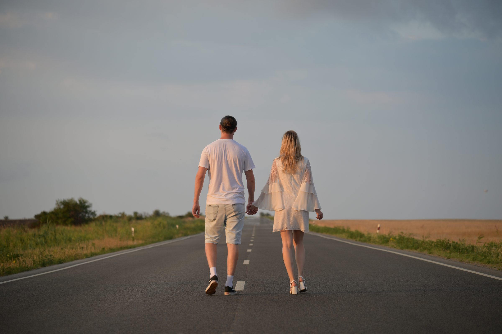

19 сентября 2026 · Курганинск
Артём & Юлия
Кажется, это именно тот день, который хочется провести рядом с самыми дорогими людьми. Будем счастливы, если вы разделите с нами этот праздник и станете частью нашей истории.
Программа дня
Как пройдёт наш праздник
Церемония регистрации
ЗАГС города КурганинскаНаша семья официально появится именно в этот момент. После церемонии мы немного пофотографируемся и отправимся готовиться к праздничному вечеру.
Банкет
Ресторан «Белый рояль»Вместе будем смеяться, танцевать, говорить тёплые слова, делать фотографии и просто наслаждаться этим днём. Очень хочется, чтобы именно вы были рядом.
Место проведения
Куда приезжать
Ниже — адреса церемонии и банкета. Точку с рестораном можно открыть в Яндекс Картах и построить маршрут.
Если карта загружается медленно или не отображается — воспользуйтесь кнопками ниже.
Дресс-код
Наша цветовая палитра
Мы мечтаем, чтобы праздник получился лёгким, уютным и гармоничным. Будем рады, если при выборе наряда вы поддержите нашу палитру — ниже не восемь точных цветов, а три семейства тонов, внутри которых можно выбирать свободно.
Белый оставляем для невесты — чёрный, наоборот, уместен, если разбавить его этими природными оттенками.
На празднике
Хотите сделать сюрприз?
Если хотите рассказать небольшую историю о нас или устроить сюрприз — согласуйте это заранее с нашим ведущим.
Денис, +7 (918) 255-69-15Подтверждение
Подтвердите, пожалуйста, своё присутствие
Просто напишите или позвоните — сообщите, сможете ли вы приехать и сколько будет гостей.
+7 (918) 320-19-42Артём — WhatsApp и Telegram по этому же номеру
И присоединяетесь в чаты
